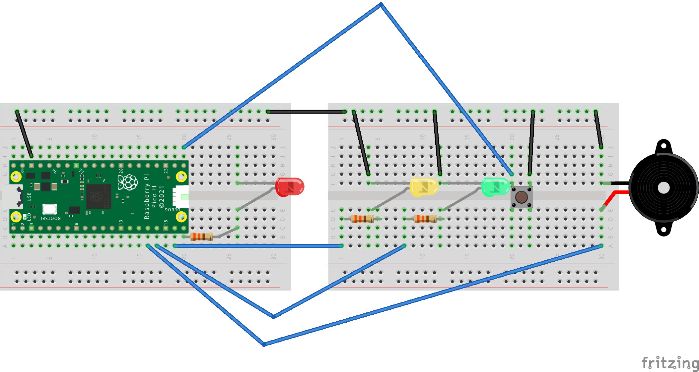
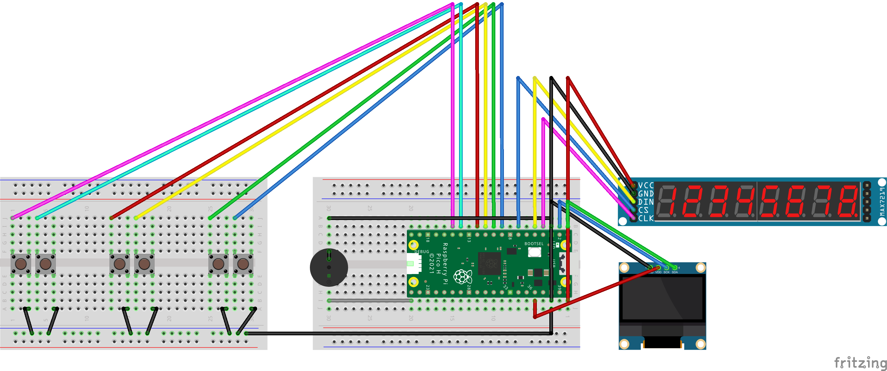
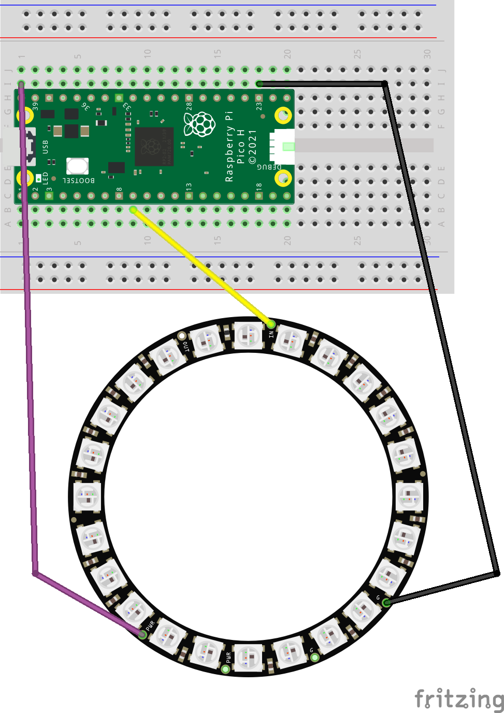

Projekt
Tre projekt byggda med Raspberry Pi Pico och MicroPython, från grundläggande I/O till avancerad protokollhantering.
Ett grundläggande hårdvaruprojekt som demonstrerar hur man hanterar LEDs, en knapp med hardware interrupts, och en piezo-buzzer för att skapa ett sekventiellt trafikljus med inbyggd larmfunktion.

Kopplingsschema i Fritzing (Ladda upp som images/fritzing-traffic-light.png)
import machine
import time
led_red = machine.Pin(15, machine.Pin.OUT)
led_amber = machine.Pin(14, machine.Pin.OUT)
led_green = machine.Pin(13, machine.Pin.OUT)
button = machine.Pin(16, machine.Pin.IN, machine.Pin.PULL_UP)
buzzer = machine.Pin(12, machine.Pin.OUT)
button_pressed = False
def btn_handler(pin):
global button_pressed
if not button_pressed:
button_pressed = True
button.irq(trigger=machine.Pin.IRQ_FALLING, handler=btn_handler)
while True:
if button_pressed == True:
led_red.value(1)
for i in range(20):
buzzer.value(1)
time.sleep(0.05)
buzzer.value(0)
time.sleep(0.2)
button_pressed = False
led_red.value(1)
time.sleep(5)
led_amber.value(1)
time.sleep(2)
led_red.value(0)
led_amber.value(0)
led_green.value(1)
time.sleep(5)
led_green.value(0)
led_amber.value(1)
time.sleep(5)
led_amber.value(0)En fullfjädrad poängtavla med MAX7219 7-segment display och SSD1306 OLED. Sex knappar styr poängräkning, reset och en speciell "GOAL!"-animation med buzzer-ljudeffekt över I2C och SPI-protokollen.

Kopplingsschema i Fritzing (Ladda upp som images/fritzing-scoreboard.png)
from machine import Pin, SPI, PWM, I2C
import max7219_8digit
import ssd1306 #oled plugin
import time
spi = SPI(0, baudrate=10000000, polarity=1, phase=0, sck=Pin(2), mosi=Pin(3))
ss = Pin(5, Pin.OUT)
display = max7219_8digit.Display(spi, ss)
i2c = I2C(0, scl=Pin(1), sda=Pin(0), freq=400000)
oled = ssd1306.SSD1306_I2C(128, 64, i2c) #res
#så att inget är kvar på skärmen
oled.fill(0)
oled.show()
#on or off
home_plus = Pin(6, Pin.IN, Pin.PULL_UP)
home_minus = Pin(7, Pin.IN, Pin.PULL_UP)
away_plus = Pin(8, Pin.IN, Pin.PULL_UP)
away_minus = Pin(9, Pin.IN, Pin.PULL_UP)
reset_btn = Pin(10, Pin.IN, Pin.PULL_UP)
goal_btn = Pin(11, Pin.IN, Pin.PULL_UP)
#på 0 så att de e tyst
buzzer = PWM(Pin(16))
buzzer.duty_u16(0)
#variabler för poeng
home_score = 0
away_score = 0
#text på skärmen
display.write_to_buffer("H-00A-00")
display.display()
while True:
#om nedtryckt
if home_plus.value() == 0:
if home_score < 99: #max 99 så inte blir konstigt på skärmen
home_score += 1
time.sleep(0.2)
if home_minus.value() == 0:
if home_score > 0:
home_score -= 1
time.sleep(0.2)
if away_plus.value() == 0:
if away_score < 99:
away_score += 1
time.sleep(0.2)
if away_minus.value() == 0:
if away_score > 0:
away_score -= 1
time.sleep(0.2)
#reset nollställer både var
if reset_btn.value() == 0:
home_score = 0
away_score = 0
time.sleep(0.2)
if goal_btn.value() == 0:
#sätter volym 50%
buzzer.duty_u16(30000)
#3 frekvenser
for f in [600, 900, 1200]:
buzzer.freq(f)
time.sleep(0.2)
#stänger ljudet
buzzer.duty_u16(0)
#fyller oled skärmed med vit
oled.fill(1)
#skriver texten goal
oled.text("GOAL!", 44, 28, 0)
oled.show()
time.sleep(2)
oled.fill(0)
oled.show()
#{:02d} gör så att talet måste ha 2 siffror
display_text = "H-{:02d}A-{:02d}".format(home_score, away_score)
display.write_to_buffer(display_text)
display.display()
#förhindra krasher
time.sleep(0.01)En vacker analog klocka med 24 WS2812 NeoPixel-LEDs på en ring. Den använder Pico's inbyggda RTC för exakt tidsmätning och en skräddarsydd PIO (Programmable I/O) state machine för att driva det tidskritiska datagränssnittet för NeoPixels.

Kopplingsschema i Fritzing (Ladda upp som images/fritzing-neopixel.png)
# Example using PIO to drive a set of WS2812 LEDs.
import array, time
from machine import Pin, RTC #rtc för datorstid
import rp2
rtc = RTC() #rtc variabel
# Configure the number of WS2812 LEDs.
NUM_LEDS = 24
PIN_NUM = 6
brightness = 0.02
@rp2.asm_pio(sideset_init=rp2.PIO.OUT_LOW, out_shiftdir=rp2.PIO.SHIFT_LEFT, autopull=True, pull_thresh=24)
def ws2812():
T1 = 2
T2 = 5
T3 = 3
wrap_target()
label("bitloop")
out(x, 1) .side(0) [T3 - 1]
jmp(not_x, "do_zero") .side(1) [T1 - 1]
jmp("bitloop") .side(1) [T2 - 1]
label("do_zero")
nop() .side(0) [T2 - 1]
wrap()
# Create the StateMachine with the ws2812 program, outputting on pin
sm = rp2.StateMachine(0, ws2812, freq=8_000_000, sideset_base=Pin(PIN_NUM))
# Start the StateMachine, it will wait for data on its FIFO.
sm.active(1)
# Display a pattern on the LEDs via an array of LED RGB values.
ar = array.array("I", [0 for _ in range(NUM_LEDS)])
def pixels_show():
dimmer_ar = array.array("I", [0 for _ in range(NUM_LEDS)])
for i,c in enumerate(ar):
r = int(((c >> 8) & 0xFF) * brightness)
g = int(((c >> 16) & 0xFF) * brightness)
b = int((c & 0xFF) * brightness)
dimmer_ar[i] = (g<<16) + (r<<8) + b
sm.put(dimmer_ar, 8)
time.sleep_ms(10)
def pixels_set(i, color):
ar[i] = (color[1]<<16) + (color[0]<<8) + color[2]
def pixels_fill(color):
for i in range(len(ar)):
pixels_set(i, color)
BLACK = (0, 0, 0)
RED = (255, 0, 0)
YELLOW = (255, 150, 0)
GREEN = (0, 255, 0)
COLORS = (BLACK, RED, YELLOW, GREEN)
while True:
t = rtc.datetime() #få tiden
h = t[4] #0-23
m = t[5] #0-59
s = t[6] #0-59
#clear
pixels_fill(BLACK)
#60s till 12 platser
sec_spot = int(s / 5)
sec_led = sec_spot * 2
#60m till 12 platser
min_spot = int(m / 5)
min_led = min_spot * 2
#12t till 12 platser
hour_spot = h % 12
hour_led = hour_spot * 2
#seconds green, minute yellow, hour, red
pixels_set(sec_led, GREEN)
pixels_set(min_led, YELLOW)
pixels_set(hour_led, RED)
pixels_show()
time.sleep(0.1)